건축기사 (2021-05-15 기출문제)
1과목: 건축계획
1. 주택의 부엌 작업대 배치유형 중 ㄷ자형에 관한 설명으로 옳은 것은?
- 두 벽면을 따라 작업이 전개되는 전통적인 형태이다.
- 평면계획상 외부로 통하는 출입구의 설치가 곤란하다.
- 작업동선이 길고 조리면적은 좁지만 다수의 인원이 함께 작업할 수 있다.
- 가장 간결하고 기본적인 설계형태로 길이가 4.5m 이상이 되면 동선이 비효율적이다.
(정답률: 76%)

2. 호텔에 관한 설명으로 옳지 않은 것은?
- 커머셜 호텔은 일반적으로 고밀도의 고층형이다.
- 터미널 호텔에는 공항 호텔, 부두 호텔, 철도역 호텔 등이 있다.
- 리조트 호텔의 건축 형식은 주변 조건에 따라 자유롭게 이루어진다.
- 레지던셜 호텔은 여행자의 장기간 체재에 적합한 호텔로서, 각 객실에는 주방 설비를 갖추고 있다.
(정답률: 75%)
3. 다음 설명에 알맞은 공장건축의 레이아웃(layout) 형식은?
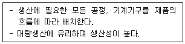
- 혼성식 레이아웃
- 고정식 레이아웃
- 제품중심의 레이아웃
- 공정중심의 레이아웃
(정답률: 82%)
4. 주심포 형식에 관한 설명으로 옳지 않은 것은?
- 공포를 기둥 위에만 배열한 형식이다.
- 장혀는 긴 것을 사용하고 평방이 사용된다.
- 봉정사 극락전, 수덕사 대웅전 등에서 볼 수 있다.
- 맞배지붕이 대부분이며 천장을 특별히 가설하지 않아 서까래가 노출되어 보인다.
(정답률: 60%)
5. 다음 설명에 알맞은 사무소 건축의 코어 유형은?
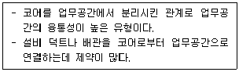
- 외코어형
- 편단코어형
- 양단코어형
- 중앙코어형
(정답률: 75%)
6. 건축계획단계에서의 조사방법에 관한 설명으로 옳지 않은 것은?
- 설문조사를 통하여 생활과 공간 간의 대응관계를 규명하는 것은 생활행동 행위의 관찰에 해당된다.
- 이용 상황이 명확하게 기록되어 있는 시설의 자료 등을 활용하는 것은 기존자료를 통한 조사에 해당된다.
- 건물의 이용자를 대상으로 설문을 작성하여 조사하는 방식은 생활과 공간의 대응관계 분석에 유효하다.
- 주거단지에서 어린이들의 행동특성을 조사하기 위해서는 생활행동 행위 관찰방식이 일반적으로 적절하다.
(정답률: 79%)
7. 학교운용방식에 관한 설명으로 옳지 않은 것은?
- 종합교실형은 교실의 이용률이 높지만 순수율은 낮다.
- 일반교실 및 특별교실형은 우리나라 중학교에서 주로 사용되는 방식이다.
- 교과교실형에서는 모든 교실이 특정교과를 위해 만들어지고, 일반교실이 없다.
- 플라톤형은 학년과 학급을 없애고 학생들은 각자의 능력에 따라 교과를 선택하고 일정한 교과가 끝나면 졸업을 한다.
(정답률: 73%)
8. 페리(C. A. Perry)의 근린주구에 관한 설명으로 옳지 않은 것은?
- 경계 : 4면의 간선도로에 의해 구획
- 공공시설용지 : 지구 전체에 분산하여 배치
- 오픈 스페이스 : 주민의 일상생활 요구를 충족시키기 위한 소공원과 위락공간체계
- 지구 내 가로체계 : 내부 가로망은 단지 내의 교통량을 원활히 처리하고 통과 교통을 방지
(정답률: 75%)
9. 다음 중 백화점의 기둥간격 결정 요소와 가장 거리가 먼 것은?
- 매장의 연면적
- 진열장의 배치방법
- 지하주차장의 주차방식
- 에스컬레이터의 배치방법
(정답률: 57%)
10. 고딕양식의 건축물에 속하지 않는 것은?
- 아미앵 성당
- 노트르담 성당
- 샤르트르 성당
- 성 베드로 성당
(정답률: 62%)
11. 도서관 건축 계획에서 장래에 증축을 반드시 고려해야 할 부분은?
- 서고
- 대출실
- 사무실
- 휴게실
(정답률: 89%)
12. 병원건축형식 중 분관식(Pavillion type)에 관한 설명으로 옳은 것은?
- 대지가 협소할 경우 주로 적용된다.
- 보행길이가 짧아져 관리가 용이하다.
- 각 병실의 일조, 통풍 환경을 균일하게 할 수 있다.
- 급수, 난방 등의 배관 길이가 짧아져 설비비가 적게 된다.
(정답률: 83%)
13. 단독주택의 리빙 다이닝 키친에 관한 설명으로 옳지 않은 것은?
- 공간의 이용률이 높다.
- 소규모 주택에 주로 사용된다.
- 주부의 동선이 짧아 노동력이 절감된다.
- 거실과 식당이 분리되어 각 실의 분위기 조성이 용이하다.
(정답률: 82%)
14. 사무소 건축의 실단위 계획에 있어서 개방식 배치에 관한 설명으로 옳지 않은 것은?
- 독립성과 쾌적감 확보에 유리하다.
- 공사비가 개실시스템보다 저렴하다.
- 방의 길이나 깊이에 변화를 줄 수 있다.
- 전면적을 유효하게 이용할 수 있어 공간 절약상 유리하다.
(정답률: 83%)
15. 아파트의 평면형식 중 계단실형에 관한 설명으로 옳은 것은?
- 대지에 대한 이용률이 가장 높은 유형이다.
- 통행을 위한 공용 면적이 크므로 건물의 이용도가 낮다.
- 각 세대가 양쪽으로 개구부를 계획할 수 있는 관계로 통풍이 양호하다.
- 엘리베이터를 공용으로 사용하는 세대수가 많으므로 엘리베이터의 효율이 높다.
(정답률: 68%)
16. 르네상스 건축에 관한 설명으로 옳은 것은?
- 건축 비례와 미적 대칭 등을 중시하였다.
- 첨탑과 플라잉 버트레스가 처음 도입되었다.
- 펜덴티브 돔이 창안되어 실내 공간의 자유도가 높아졌다.
- 강렬한 극적효과를 추구하며 관찰자의 주관적 감흥을 중시하였다.
(정답률: 63%)
17. 미술관 전시실의 전시기법에 관한 설명으로 옳지 않은 것은?
- 하모니카 전시는 동일 종류의 전시물을 반복하여 전시할 경우에 유리하다.
- 아일랜드 전시는 실물을 직접 전시할 수 없는 경우 영상매체를 사용하여 전시하는 방법이다.
- 파노라마 전시는 연속적인 주제를 연관성 있게 표현하기 위해 선형의 파노라마로 연출하는 전시기법이다.
- 디오라마 전시는 하나의 사실 또는 주제의 시간 상황을 고정시켜 연출하는 것으로 현장에 임한 느낌을 주는 기법이다.
(정답률: 84%)
18. 미술관의 전시실 순회형식에 관한 설명으로 옳지 않은 것은?
- 갤러리 및 코리더 형식에서는 복도 자체도 전시공간으로 이용이 가능하다.
- 중앙홀 형식에서 중앙홀이 크면 동선의 혼란은 많으나 장래의 확장에는 유리하다.
- 연속순회 형식은 전시 중에 하나의 실을 폐쇄하면 동선이 단절된다는 단점이 있다.
- 갤러리 및 코리더 형식은 복도에서 각 전시실에 직접 출입할 수 있으며 필요시에 자유로이 독립적으로 폐쇄할 수가 있다.
(정답률: 83%)
19. 쇼핑센터의 몰(mall)에 관한 설명으로 옳은 것은?
- 전문점과 핵상점의 주 출입구는 몰에 면하도록 한다.
- 쇼핑체류시간을 늘릴 수 있도록 방향성이 복잡하게 계획한다.
- 몰은 고객의 통과동선으로서 부속시설과 서비스기능의 출입이 이루어지는 곳이다.
- 일반적으로 공기조화에 의해 쾌적한 실내 기후를 유지할 수 있는 오픈 몰(open mall)이 선호된다.
(정답률: 68%)
20. 극장건축에서 무대의 제일 뒤에 설치되는 무대 배경용의 벽을 나타내는 용어는?
- 프로시니엄
- 사이클로라마
- 플라이 로프트
- 그리드 아이언
(정답률: 78%)
2과목: 건축시공
21. 백화 현상에 관한 설명으로 옳지 않은 것은?
- 시멘트는 수산화칼슘의 주성분인 생석회(CaO)의 다량 공급원으로서 백화의 주된 요인이다.
- 백화 현상은 미장 표면뿐만 아니라 벽돌벽체, 타일 및 착색 시멘트 제품 등의 표면에도 발생한다.
- 겨울철보다 여름철의 높은 온도에서 백화 발생 빈도가 높다.
- 배합수 중에 용해되는 가용 성분이 시멘트 경화체의 표면건조 후 나타나는 현상이다.
(정답률: 79%)
22. 계측관리 항목 및 기기에 관한 설명으로 옳지 않은 것은?
- 흙막이벽의 응력은 변형계(Strain Gauge)를 이용한다.
- 주변 건물의 경사는 건물경사계(Tiltmeter)를 이용한다.
- 지하수의 간극수압은 지하수위계(Water Level Meter)를 이용한다.
- 버팀보, 앵커 등의 축하중 변화 상태의 측정은 하중계(Load Cell)를 이용한다.
(정답률: 63%)
23. 녹막이 칠에 사용하는 도료와 가장 거리가 먼 것은?
- 광명단
- 크레오소트유
- 아연분말 도료
- 역청질 도료
(정답률: 70%)
24. 사질토의 상대밀도를 측정하는 방법으로 가장 적합한 것은?
- 표준관입시험(Standard Penetration Test)
- 베인 테스트(Vane Test)
- 깊은 우물(Deep well) 공법
- 아일랜드 공법
(정답률: 65%)
25. 철골부재의 용접 시 이음 및 접합부위의 용접선의 교차로 재 용접된 부위가 열 영향을 받아 취약해짐을 방지하기 위하여 모재에 부채꼴 모양으로 모따기를 한 것은?
- Blow Hole
- Scallop
- End Tap
- Crater
(정답률: 74%)
26. 공동도급방식(Joint Venture)에 관한 설명으로 옳은 것은?
- 2명 이상의 수급자가 어느 특정 공사에 대하여 협동으로 공사계약을 체결하는 방식이다.
- 발주자, 설계자, 공사관리자의 세 전문집단에 의하여 공사를 수행하는 방식이다.
- 발주자와 수급자가 상호신뢰를 바탕으로 팀을 구성하여 공동으로 공사를 수행하는 방식이다.
- 공사수행방식에 따라 설계/시공(D/B)방식과 설계/관리(D/M)방식으로 구분한다.
(정답률: 78%)
27. 칠공사에 관한 설명으로 옳지 않은 것은?
- 한랭 시나 습기를 가진 면은 작업을 하지 않는다.
- 초벌부터 정벌까지 같은 색으로 도장해야 한다.
- 강한 바람이 불 때는 먼지가 묻게 되므로 외부 공사를 하지 않는다.
- 야간은 색을 잘못 칠할 염려가 있으므로 작업을 하지 않는 것이 좋다.
(정답률: 82%)
28. 석재에 관한 설명으로 옳은 것은?
- 인장강도는 압축강도에 비하여 10배 정도 크다.
- 석재는 불연성이긴 하나 화열에 닿으면 화강암과 같이 균열이 생기거나 파괴되는 경우도 있다.
- 장대재를 얻기에 용이하다.
- 조직이 치밀하여 가공성이 매우 뛰어나다.
(정답률: 64%)
29. 목재의 접착제로 활용되는 수지와 가장 거리가 먼 것은?
- 요소 수지
- 멜라민 수지
- 폴리스티렌 수지
- 페놀 수지
(정답률: 56%)
30. 보강 블록공사에 관한 설명으로 옳지 않은 것은?
- 벽의 세로근은 구부리지 않고 설치한다.
- 벽의 세로근은 밑창 콘크리트 윗면에 철근을 배근하기 위한 먹매김을 하여 기초판 철근 위의 정확한 위치에 고정시켜 배근한다.
- 벽 가로근 배근 시 창 및 출입구 등의 모서리 부분에 가로근의 단부를 수평방향으로 정착할 여유가 없을 때에는 갈구리로 하여 단부 세로근에 걸고 결속선으로 결속한다.
- 보강 블록조와 라멘구조가 접하는 부분은 라멘구조를 먼저 시공하고 보강 블록조를 나중에 쌓는 것이 원칙이다.
(정답률: 60%)
31. 다음 설명에서 의미하는 공법은?
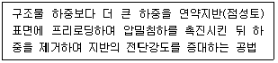
- 고결안정공법
- 치환공법
- 재하공법
- 탈수공법
(정답률: 67%)
32. 재료별 할증률을 표기한 것으로 옳은 것은?
- 시멘트벽돌 : 3%
- 강관 : 7%
- 재단열재 : 7%
- 봉강 : 5%
(정답률: 50%)
33. 철근의 정착 위치에 관한 설명으로 옳지 않은 것은?
- 지중보의 주근은 기초 또는 기둥에 정착한다.
- 기둥 철근은 큰 보 혹은 작은 보에 정착한다.
- 큰 보의 주근은 기둥에 정착한다.
- 작은 보의 주근은 큰 보에 정착한다.
(정답률: 68%)
34. 돌로마이트 플라스터 바름에 관한 설명으로 옳지 않은 것은?
- 정벌바름용 반죽은 물과 혼합한 후 12시간 정도 지난 다음 사용하는 것이 바람직하다.
- 바름두께가 균일하지 못하면 균열이 발생하기 쉽다.
- 돌로마이트 플라스터는 수경성이므로 해초풀을 적당한 비율로 배합해서 사용해야 한다.
- 시멘트와 혼합하여 2시간 이상 경과한 것은 사용할 수 없다.
(정답률: 64%)
35. 석고플라스터 바름에 관한 설명으로 옳지 않은 것은?
- 보드용 플라스터는 초벌바름, 재벌바름의 경우 물을 가한 후 2시간 이상 경과한 것은 사용할 수 없다.
- 실내온도가 10℃ 이하일 때는 공사를 중단하거나 난방하여 10℃ 이상으로 유지한다.
- 바름작업 중에는 될 수 있는 한 통풍을 방지한다.
- 바름 작업이 끝난 후 실내를 밀폐하지 않고 가열과 동시에 환기하여 바름면이 서서히 건조되도록 한다.
(정답률: 60%)
36. 기술제안입찰제도의 특징에 관한 설명으로 옳지 않은 것은?
- 공사비 절감방안의 제안은 불가하다.
- 기술제안서 작성에 추가비용이 발생된다.
- 제안된 기술의 지적재산권 인정이 미흡하다.
- 원안 설계에 대한 공법, 품질 확보 등이 핵심 제안요소이다.
(정답률: 60%)
37. 토공사에 적용되는 체적환산계수 L의 정의로 옳은 것은?
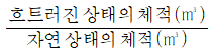
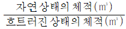
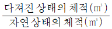
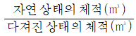
(정답률: 66%)
38. 멤브레인 방수에 속하지 않는 방수공법은?
- 시멘트 액체방수
- 합성고분자 시트방수
- 도막방수
- 아스팔트 방수
(정답률: 57%)
39. 아파트 온돌바닥미장용 콘크리트로서 고층적용 실적이 많고 배합을 조닝별로 다르게 하며 타설 바탕면에 따라 배합비 조정이 필요한 것은?
- 경량기포 콘크리트
- 중량 콘크리트
- 수밀 콘크리트
- 유동화 콘크리트
(정답률: 57%)
40. 공급망관리(Supply Chain Management)의 필요성이 상대적으로 가장 적은 공종은?
- PC(Precast Concrete)공사
- 콘크리트공사
- 커튼월공사
- 방수공사
(정답률: 57%)
3과목: 건축구조
41. 합성보에서 강재보와 철근콘크리트 또는 합성슬래브 사이의 미끄러짐을 방지하기 위하여 설치하는 것은?
- 스터드 볼트
- 퍼린
- 윈드칼럼
- 턴버클
(정답률: 55%)
42. 다음 중 내진 I등급 구조물의 허용층간변위로 옳은 것은? (단, KDS기준, hsx는 x층 층고)
- 0.0⑤ hsx
- 0.010 hsx
- 0.015 hsx
- 0.020 hsx
(정답률: 62%)
43. 그림과 같은 단순보에서 반력 RA의 값은?
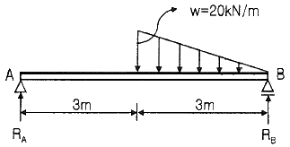
- 5 kN
- 10 kN
- 20 kN
- 25 kN
(정답률: 60%)
44. 등분포하중을 받는 4변 고정 2방향 슬래브에서 모멘트양이 일반적으로 가장 크게 나타나는 곳은?
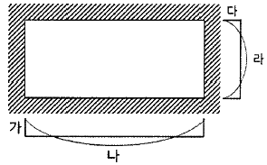
- 가
- 나
- 다
- 라
(정답률: 53%)
45. 강도설계법에서 양단 연속 1방향 슬래브의 스팬이 3000mm일 때 처짐을 계산하지 않는 경우 슬래브의 최소 두께를 계산한 값으로 옳은 것은? (단, 단위중량 wc = 2300kg/m3 의 보통콘크리트 및 fy = 400MPa 철근 사용)
- 107.1mm
- 124.3mm
- 132.1mm
- 145.5mm
(정답률: 46%)
46. 다음 구조용 강재의 명칭에 관한 내용으로 옳지 않은 것은?
- SM – 용접구조용 압연강재(KS D 3515)
- SS – 일반구조용 압연강재(KS D 3503)
- SN – 건축구조용 각형 탄소강관(KS D 3864)
- SGT – 일반구조용 탄소강관(KS D 3566)
(정답률: 64%)
47. 다음 그림과 같은 단순 인장접합부의 강도한계 상태에 따른 고력볼트의 설계전단강도를 구하면? (단, 강재의 재질은 SS275이며 고력볼트는 M22(F10T), 공칭전단강도 Fnv = 500MPa, ø = 0.75)
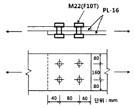
- 500kN
- 530kN
- 550kN
- 570kN
(정답률: 39%)
48. 그림과 같이 스팬이 8,000mm이며, 보 중심 간격이 3,000mm인 합성보 H-588×300×12×20의 강재에 콘크리트 두께 150mm로 합성보를 설계하고자 한다. 합성보 B의 슬래브 유효폭을 구하면? (단, 스터드 전단연결재가 설치됨)
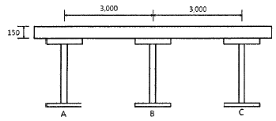
- 1,500 mm
- 2,000 mm
- 3,000 mm
- 4,000 mm
(정답률: 51%)
49. 철근콘크리트 보 설계 시 적용되는 경량콘크리트계수 중 모래경량콘크리트의 경우에 적용되는 계수값은 얼마인가?
- 0.65
- 0.75
- 0.85
- 1.0
(정답률: 45%)
50. 도심축에 대한 빗줄(사선)친 부분의 단면계수 값은?
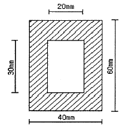
- 19,000 mm3
- 20,500 mm3
- 21,000 mm3
- 22,500 mm3
(정답률: 37%)
51. 다음 그림과 같은 단순보에서 부재 길이가 2배로 증가할 때 보의 중앙점 최대 처짐은 몇 배로 증가되는가?
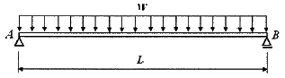
- 2배
- 4배
- 8배
- 16배
(정답률: 53%)
52. 다음과 같은 구조물의 판별로 옳은 것은? (단, 그림의 하부지점은 고정단임)
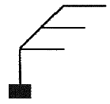
- 불안정
- 정정
- 1차부정정
- 2차부정정
(정답률: 68%)
53. 활하중의 영향면적 산정기준으로 옳은 것은? (단, KDS 기준)
- 부하면적 중 캔틸레버 부분은 영향면적에 단순합산
- 기둥 및 기초에서는 부하면적의 6배
- 보에서는 부하면적의 5배
- 슬래브에서는 부하면적의 2배
(정답률: 51%)
54. 인장력을 받는 원형단면 강봉의 지름을 4배로 하면 수직응력도(Normal stress)는 기존 응력도의 얼마로 줄어드는가?
- 1/2
- 1/4
- 1/8
- 1/16
(정답률: 61%)
55. 보통중량콘크리트를 사용한 그림과 같은 보의 단면에서 외력에 의해 휨 균열을 일으키는 균열모멘트(Mcr)값으로 옳은 것은? (단, fck = 27MPa, fy = 400MPa, 철근은 개략적으로 도시되었음)
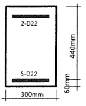
- 29.5 kN·m
- 34.7 kN·m
- 40.9 kN·m
- 52.4 kN·m
(정답률: 48%)
56. 그림과 같은 부정정 라멘에서 A점의 MAB는?
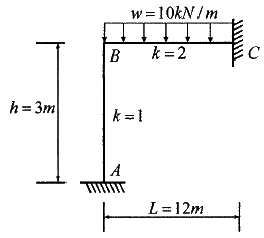
- 0
- 20 kN·m
- 40 kN·m
- 60 kN·m
(정답률: 51%)
57. 그림과 같은 부정정 라멘의 B.M.D에서 P값을 구하면?
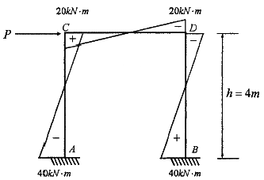
- 20 kN
- 30 kN
- 50 kN
- 60 kN
(정답률: 59%)
58. KDS에서 철근콘크리트 구조의 최소 피복두께를 규정하는 이유로 보기 어려운 것은?
- 철근이 부식되지 않도록 보호
- 철근의 화해(火害) 방지
- 철근의 부착력 확보
- 콘크리트의 동결융해 방지
(정답률: 57%)
59. 인장이형철근 및 압축이형철근의 정착길이(ld)에 관한 기준으로 옳지 않은 것은? (단, KDS 기준)
- 계산에 의하여 산정한 인장이형철근의 정착길이는 항상 200mm 이상이어야 한다.
- 계산에 의하여 산정한 압축이형철근의 정착길이는 항상 200mm 이상이어야 한다.
- 인장 또는 압축을 받는 하나의 다발철근 내에 있는 개개 철근의 정착길이 ld는 다발철근이 아닌 경우의 각 철근의 정착길이보다 3개의 철근으로 구성된 다발철근에 대해서는 20%를 증가시켜야 한다.
- 단부에 표준갈고리가 있는 인장이형철근의 정착길이는 항상 8db이상, 또한 150mm 이상이어야 한다.
(정답률: 50%)
60. 그림과 같은 구조물에 힘 P가 작용할 때 휨모멘트가 0이 되는 곳은 모두 몇 개인가?
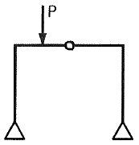
- 2개
- 3개
- 4개
- 5개
(정답률: 51%)
4과목: 건축설비
61. 다음 설명에 알맞은 통기방식은?
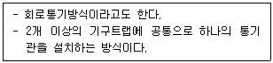
- 공용통기방식
- 루프통기방식
- 신정통기방식
- 결합통기방식
(정답률: 48%)
62. 어떤 실의 취득열량이 현열 35,000W, 잠열 15,000W이었을 때, 현열비는?
- 0.3
- 0.4
- 0.7
- 2.3
(정답률: 65%)
63. 다음과 같은 조건에 있는 실의 틈새바람에 의한 현열부하는?
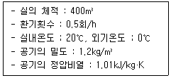
- 약 654 W
- 약 972 W
- 약 1,347 W
- 약 1,654 W
(정답률: 63%)
64. 다음 중 건축물 실내공간의 잔향시간에 가장 큰 영향을 주는 것은?
- 실의 용적
- 음원의 위치
- 벽체의 두께
- 음원의 음압
(정답률: 69%)
65. 자연환기에 관한 설명으로 옳지 않은 것은?
- 풍력환기량은 풍속이 높을수록 증가한다.
- 중력환기량은 개구부 면적이 클수록 증가한다.
- 중력환기량은 실내외 온도차가 클수록 감소한다.
- 중력환기는 실내외의 온도차에 의한 공기의 밀도차가 원동력이 된다.
(정답률: 74%)
66. 단일덕트 변풍량 방식에 관한 설명으로 옳지 않은 것은?
- 전공기방식의 특성이 있다.
- 각 실이나 존의 온도를 개별제어할 수 있다.
- 일사량 변화가 심한 페리미터 존에 적합하다.
- 정풍량 방식에 비해 설비비는 낮아지나 운전비가 증가한다.
(정답률: 51%)
67. 다음 중 조명률에 영향을 끼치는 요소와 가장 거리가 먼 것은?
- 광원의 높이
- 마감재의 반사율
- 조명기구의 배광방식
- 글레어(glare)의 크기
(정답률: 62%)
68. 간접가열식 급탕방식에 관한 설명으로 옳지 않은 것은?
- 저압보일러를 써도 되는 경우가 많다.
- 직접가열식에 비해 소규모 급탕설비에 적합하다.
- 급탕용 보일러는 난방용 보일러와 겸용할 수 있다.
- 직접가열식에 비해 보일러 내면에 스케일이 발생할 염려가 적다.
(정답률: 62%)
69. 자동화재탐지설비의 열감지기 중 주위온도가 일정온도 이상일 때 작동하는 것은?
- 차동식
- 정온식
- 광전식
- 이온화식
(정답률: 76%)
70. 온열 감각에 영향을 미치는 물리적 온열 4요소에 속하지 않는 것은??
- 기온
- 습도
- 일사량
- 복사열
(정답률: 57%)
71. 옥내소화전설비에 관한 설명으로 옳지 않은 것은?
- 옥내소화전방수구는 바닥으로부터의 높이가 1.5m 이하가 되도록 설치한다.
- 옥내소화전설비의 송수구는 구경 65mm의 쌍구형 또는 단구형으로 한다.
- 전동기에 따른 펌프를 이용하는 가압송수 장치를 설치하는 경우, 펌프는 전용으로 하는 것이 원칙이다.
- 어느 한 층의 옥내소화전을 동시에 사용할 경우 각 소화전의 노즐선단에서의 방수압력은 최소 0.7 MPa 이상이 되어야 한다.
(정답률: 60%)
72. 다음 설명에 알맞은 접지의 종류는?
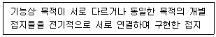
- 단독접지
- 공통접지
- 통합접지
- 종별접지
(정답률: 67%)
73. 온수난방방식에 관한 설명으로 옳지 않은 것은?
- 예열시간이 짧아 간헐운전에 주로 이용된다.
- 한랭지에서 운전 정지 중에 동결의 위험이 있다.
- 증기난방방식에 의해 난방부하 변동에 따른 온도조절이 용이하다.
- 보일러 정지 후에도 여열이 남아 있어 실내 난방이 어느 정도 지속된다
(정답률: 72%)
74. 흡수식 냉동기의 주요 구성부분에 속하지 않는 것은?
- 응축기
- 압축기
- 증발기
- 재생기
(정답률: 50%)
75. 다음 설명에 알맞은 급수 방식은?
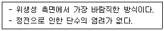
- 수도직결방식
- 고가수조방식
- 압력수조방식
- 펌프직송방식
(정답률: 73%)
76. 가스설비에 사용되는 거버너(govermor)에 관한 설명으로 옳은 것은?
- 실내에서 발생되는 배기가스를 외부로 배출시키는 장치
- 연소가 원활히 이루어지도록 외부로부터 공기를 받아들이는 장치
- 가스가 누설되거나 지진이 발생했을 때 가스공급을 긴급히 차단하는 장치
- 가스공급회사로부터 공급받은 가스를 건물에서 사용하기에 적합한 압력으로 조정하는 장치
(정답률: 67%)
77. 엘리베이터의 안전장치에 속하지 않는 것은?
- 균형추
- 완충기
- 조속기
- 전자브레이크
(정답률: 60%)
78. 어느 점광원에서 1m 떨어진 곳의 직각면 조도가 200lx 일 때, 이 광원에서 2m 떨어진 곳의 직각면 조도는?
- 25 lx
- 50 lx
- 100 lx
- 200 lx
(정답률: 73%)
79. 전기설비의 배선공사에 관한 설명으로 옳지 않은 것은?
- 금속관 공사는 외부적 응력에 대해 전선보호의 신뢰성이 높다.
- 합성수지관 공사는 열적 영향이나 기계적 외상을 받기 쉬운 곳에서는 사용이 곤란하다.
- 금속 덕트 공사는 다수회선의 절연전선이 동일 경로에 부설되는 간선 부분에 사용된다.
- 플로어 덕트 공사는 옥내의 건조한 콘크리트 바닥면에 매입 사용되나 강⦁약전을 동시에 배선할 수 없다.
(정답률: 59%)
80. 급수설비에서 역류를 방지하여 오염으로부터 상수계통을 보호하기 위한 방법으로 옳지 않은 것은?
- 토수구 공간을 둔다.
- 각개통기관을 설치한다.
- 역류방지밸브를 설치한다.
- 가압식 진공브레이커를 설치한다.
(정답률: 44%)
5과목: 건축법규
81. 계단 및 복도의 설치기준에 관한 설명으로 틀린 것은?
- 높이가 3m를 넘은 계단에는 높이 3m 이내마다 유효너비 120cm 이상의 계단참을 설치할 것
- 거실 바닥면적의 합계가 100m2 이상인 지하층에 설치하는 계단인 경우 계단 및 계단참의 유효너비는 120cm 이상으로 할 것
- 계단을 대체하여 설치하는 경사로의 경사도는 1:6을 넘지 아니할 것
- 문화 및 집회시설 중 공연장의 개별 관람실(바닥면적이 300m2 이상인 경우)의 바깥쪽에는 그 양쪽 및 뒤쪽에 각각 복도를 설치할 것
(정답률: 58%)
82. 면적 등의 산정방법과 관련한 용어의 설명 중 틀린 것은?
- 대지면적은 대지의 수평 투영면적으로 한다.
- 건축면적은 건축물의 외벽의 중심선으로 둘러싸인 부분의 수평 투영면적으로 한다.
- 용적률을 산정할 때에는 지하층의 면적을 포함하여 연면적을 계산한다.
- 건축물의 높이는 지표면으로부터 그 건축물의 상단까지의 높이로 한다.
(정답률: 72%)
83. 세대의 구분이 불분명한 건축물로 주거에 쓰이는 바닥면적의 합계가 300m2인 주거용 건축물의 음용수용 급수관 지름의 최소기준은?
- 20 mm
- 25 mm
- 32 mm
- 40 mm
(정답률: 57%)
84. 다음 중 내화구조에 해당하지 않는 것은?
- 벽의 경우 철재로 보강된 콘크리트블록조⦁벽돌조 또는 석조로서 철재에 덮은 콘크리트블록 등의 두께가 3cm 이상인 것
- 기둥의 경우 철근콘크리트조로서 그 작은 지름이 25cm 이상인 것
- 바닥의 경우 철근콘크리트조로서 두께가 10cm 이상인 것
- 철근콘크리트조로 된 보
(정답률: 50%)
85. 국토의 계획 및 이용에 관한 법령상 아래와 같이 정의되는 것은?
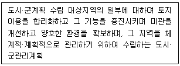
- 광역도시계획
- 지구단위계획
- 도시⦁군기본계획
- 입지규제최소구역계획
(정답률: 68%)
86. 다음 중 건축법상 건축물의 용도 구분에 속하지 않는 것은? (단, 대통령령으로 정하는 세부 용도는 제외)
- 공장
- 교육시설
- 묘지 관련 시설
- 자원순환 관련 시설
(정답률: 39%)
87. 주차장법령의 기계식주차장치의 안전기준과 관련하여, 중형 기계식주차장의 주차장치 출입구 크기기준으로 옳은 것은? (단, 사람이 통행하지 않는 기계식주차장치인 경우)
- 너비 2.3m 이상, 높이 1.6m 이상
- 너비 2.3m 이상, 높이 1.8m 이상
- 너비 2.4m 이상, 높이 1.6m 이상
- 너비 2.4m 이상, 높이 1.9m 이상
(정답률: 36%)
88. 주차장법령상 노외주차장의 구조 및 설비기준에 관한 아래 설명에서, ⓐ~ⓒ에 들어갈 내용이 모두 옳은 것은?
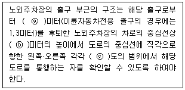
- ⓐ 1, ⓑ 1.2, ⓒ 45
- ⓐ 2, ⓑ 1.4, ⓒ 60
- ⓐ 3, ⓑ 1.6, ⓒ 60
- ⓐ 2, ⓑ 1.2, ⓒ 45
(정답률: 54%)
89. 건축물의 거실에 국토교통부령으로 정하는 기준에 따라 배연설비를 하여야 하는 대상 건축물에 속하지 않는 것은? (단, 피난층의 거실은 제외하며, 6층 이상인 견축물의 경우)
- 종교시설
- 판매시설
- 위락시설
- 방송통신시설
(정답률: 67%)
90. 피난 용도로 쓸 수 있는 광장을 옥상에 설치하여야 하는 대상 기준으로 옳지 않은 것은?
- 5층 이상인 층이 종교시설의 용도로 쓰는 경우
- 5층 이상인 층이 업무시설의 용도로 쓰는 경우
- 5층 이상인 층이 판매시설의 용도로 쓰는 경우
- 5층 이상인 층이 장례식장의 용도로 쓰는 경우
(정답률: 50%)
91. 건축물의 대지는 원칙적으로 최소 얼마 이상이 도로에 접하여야 하는가? (단, 자동차만의 통행에 사용되는 도로는 제외)
- 1.5m
- 2m
- 3m
- 4m
(정답률: 65%)
92. 다음 설명에 알맞은 용도지구의 세분은?
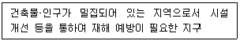
- 일반방재지구
- 시가지방재지구
- 중요시설물보호지구
- 역사문화환경보호지구
(정답률: 74%)
93. 건축지도원에 관한 설명으로 틀린 것은?
- 허가를 받지 아니하고 건축하거나 용도변경한 건축물의 단속 업무를 수행한다.
- 건축지도원은 시장, 군수, 구청장이 지정할 수 있다.
- 건축지도원의 자격과 업무범위는 국토교통부령으로 정한다.
- 건축신고를 하고 건축 중에 있는 건축물의 시공 지도와 위법 시공 여부의 확인⦁지도 및 단속 업무를 수 행한다.
(정답률: 46%)
94. 하나 이상의 필지의 일부를 하나의 대지로 할 수 있는 토지 기준에 해당하지 않는 것은?
- 도시⦁군계획시설이 결정⦁고시된 경우 그 결정⦁고시된 부분의 토지
- 농지법에 따른 농지전용허가를 받은 경우 그 허가받은 부분의 토지
- 국토의 계획 및 이용에 관한 법률에 따른 지목변경 허가를 받은 경우 그 허가받은 부분의 토지
- 산지관리법에 따른 산지전용허가를 받은 경우 그 허가받은 부분의 토지
(정답률: 44%)
95. 다음은 지하층과 피난층 사이의 개방공간 설치와 관련된 기준 내용이다. ( ) 안에 알맞은 것은?
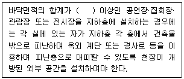
- 5백 제곱미터
- 1천 제곱미터
- 2천 제곱미터
- 3천 제곱미터
(정답률: 42%)
96. 다음 중 국토의 계획 및 이용에 관한 법령에 따른 용도지역 안에서의 건폐율 최대 한도가 가장 높은 것은?
- 준주거지역
- 중심상업지역
- 일반상업지역
- 유통상업지역
(정답률: 69%)
97. 건축물의 피난층 외의 층에서 피난층 또는 지상으로 통하는 직통계단을 거실의 각 부분으로부터 계단에 이르는 보행거리가 최대 얼마 이내가 되도록 설치하여야 하는가? (단, 건축물의 주요구조부는 내화구조이고 층수는 15층으로 공동주택이 아닌 경우)
- 30m
- 40m
- 50m
- 60m
(정답률: 38%)
98. 공동주택과 오피스텔의 난방설비를 개별난방방식으로 하는 경우 설치기준과 거리가 먼 것은?
- 보일러실의 윗부분에는 그 면적이 0.5m2 이상인 환기창을 설치할 것
- 보일러를 설치하는 곳과 거실 사이의 경계벽은 출입구를 포함하여 방화구조의 벽으로 구획할 것
- 보일러의 연도는 내화구조로서 공동연도로 설치할 것
- 기름보일러를 설치하는 경우에는 기름저장소를 보일러실 외의 다른 곳에 설치할 것
(정답률: 55%)
99. 국토의 계획 및 이용에 관한 법령상 지구단위계획의 내용에 포함되지 않는 것은?
- 건축물의 배치⦁형태⦁색채에 관한 계획
- 건축물의 안전 및 방재에 대한 계획
- 기반시설의 배치와 규모
- 교통처리계획
(정답률: 40%)
100. 다음 중 건축물의 용도변경 시 허가를 받아야 하는 경우에 해당하지 않는 것은?
- 주거업무시설군에 속하는 건축물의 용도를 근린생활시설군에 해당하는 용도로 변경하는 경우
- 문화 및 집회시설군에 속하는 건축물의 용도를 영업시설군에 해당하는 용도로 변경하는 경우
- 전기통신시설군에 속하는 건축물의 용도를 산업 등의 시설군에 해당하는 용도로 변경하는 경우
- 교육 및 복지시설군에 속하는 건축물의 용도를 문화 및 집회시설군에 해당하는 용도로 변경하는 경우
(정답률: 58%)